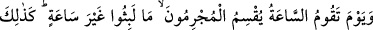
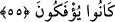
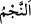
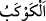
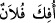

Akıllı kimseye gereken ölümü hatırlamak, yolculuğun uzaklığını düşünmek, îman ve
namaz, oruç, gece ibâdeti ve benzeri amellerle ona hazırlanmaktır. Amellerin en üstünü
ise nefsi ıslah etmek; gıybeti ve yalanı terk ederek insanlara eziyetten geri durmak ve
ameli Allah Teâlâ için hâlis kılmaktır. Bu ise gece-gündüz kalb safâsıyla tekrarlamak
sûretiyle tevhîdin kuvvetine ihtiyaç duyar.
55. Kıyâmet koptuğu gün, günahkârlar, (kabirlerde) ancak pek kısa bir süre
kaldıklarına
yemin
ederler.
İşte
onlar,
(dünyâda
da
haktan)
böyle
döndürülüyorlardı.
“Kıyâmet koptuğu gün,”
Kıyâmete “saat” denilmiştir. Çünkü o dünyâ saatlerinin sonuncusunda kopacaktır. Ya
da bu, onun âniden ve beklenmedik bir anda meydana geleceği içindir. “
”
kelimesinin Süreyya yıldızı için, “
” kelimesinin de Zühre yıldızı için alem olduğu
gibi “saat” kelimesi de çoğunlukla kıyâmet için kullanılmaktan dolayı ona alem
olmuştur.
Fethu’r-Rahmân’da “İçinde kıyâmetin olduğu saat geldiğinde” denilmiştir.
“Günahkârlar,” kâfirler kabirlerde “ancak pek kısa bir süre” bir saat, az bir zaman
“kaldıklarına yemin ederler.” Onlar unutarak, yalan söyleyerek veya tahminde
bulunarak kaldıkları müddeti az bulmuşlardır.
Onların dünyâda ancak pek kısa bir süre kaldıklarına yemin ettikleri de söylenmiştir.
Bununla birlikte birincisi daha âşikârdır. Çünkü aşağıda geleceği gibi onların kalıp
beklemesi dirilme gününe kadar olacaktır. Dünyâda kalmaları ise böyle değildir.
“İşte onlar,” dünyâda yeniden dirilişi inkâr edip onun olmadığına yemin ederek -
Nitekim yüce Allah: “Onlar: “Allah ölen bir kimseyi diriltmez” diye olanca
güçleriyle Allâh’a and içtiler.” (en-Nahl, 16/38) buyurarak bu durumu haber vermiştir-
“böyle” bu döndürülme gibi âhirette de doğruluktan, haktan “döndürülüyorlardı.” Bir
kimse doğruluktan ve hayırdan çevrilip döndürüldüğü zaman “
” denir. Yâni
haktan ve doğruluktan çevrilip döndürülüyor; bâtıla, iftirâ ve yalana başlıyorlardı. Yâni
dünyâda yalan söyledikleri gibi âhirette de yalan söylediler. Onların işi bu dünyâda da
âhirette de yalan söylemektir.
Bilesin ki Allah Teâlâ sıdkı/doğruluğu yarattı ve onun gölgesinden îman ve ihlas
ortaya çıktı. Yalanı yarattı ve onun gölgesinden inkâr ve nifak zuhûr etti. Sıdkdan
meydana gelen îman, mü’minlerin kıyâmet gününde: “Bize verdiği sözde sâdık olan